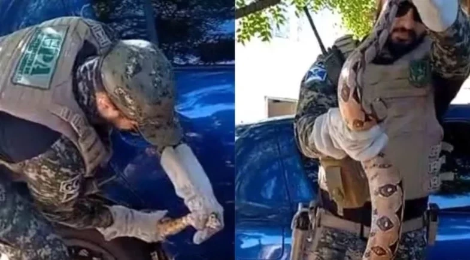

Notícias Regionais
Adolescente de 13 anos sequestrado é encontrado em cativeiro no PI; mentor do crime está foragido
O pai do menino afirmou que as pessoas que o levaram exigiram R$ 250 mil, mas ele não fez o pagamento. Ao todo, cinco suspeitos foram presos e dois estão foragidos.

Delegado conduzindo a criança em segurança até a família
Jorge Gabriel Carvalho, de 13 anos, foi encontrado em um cativeiro em Nazária, na tarde desta sexta-feira (27), após desaparecer na noite de quinta-feira (26), em Monsenhor Gil. Ao todo, cinco pessoas foram presas pela polícia suspeitas de sequestrá-lo. Ele não ficou ferido.
Segundo o secretário de Segurança Pública do Piauí, Chico Lucas, os presos são dois homens e três mulheres. Outras duas pessoas estão foragidas, incluindo o mentor do crime, identificado como Ítalo da Silva Araújo.
O delegado Anchieta Nery, diretor de Inteligência da Secretaria de Segurança Pública (SSP-PI), afirmou que Ítalo já era monitorado pela pasta, o que facilitou o planejamento da polícia para localizar o cativeiro e resgatar o adolescente.
De acordo com o delegado, o mentor do sequestro foi preso e condenado por assassinato e fugiu da penitenciária em 2021. Ao ser solto em 2023, rompeu a tornozeleira eletrônica que usava. Além disso, ele é suspeito de aplicar golpes em comerciantes fingindo ser membro de uma facção criminosa. O homem também é investigado por extorquir outras vítimas.
Cobra é resgatada após ser achada enrolada em pneu de carro na Zona Norte de Teresina
24/06/2024
O Grupamento de Proteção Ambiental (GPA) da Guarda Municipal de Teresina (GCM) foi acionado para fazer o resgate da jiboia. O animal foi solto em seu habitat, na zona rural Leste da capital.
Uma jiboia foi encontrada, nesta terça-feira (24), em um carro estacionado no Hospital Aerolino de Abreu, na Zona Norte de Teresina. O animal estava enrolado no pneu do veículo, que pertence a um funcionário do hospital.
O Grupamento de Proteção Ambiental (GPA) da Guarda Municipal de Teresina (GCM) foi acionado para fazer o resgate do animal. Conforme o GPA, a cobra possui aproximadamente 1 metro e meio. O inspetor Daniel, da Guarda Civil, informou que, geralmente, as cobras escolhem casas ou terrenos para se abrigarem. Essa foi a primeira vez em que a equipe foi chamada para resgate em um carro. Segundo ele, a aparição deve ter sido motivada por destruição ambiental.
principalPolitíca